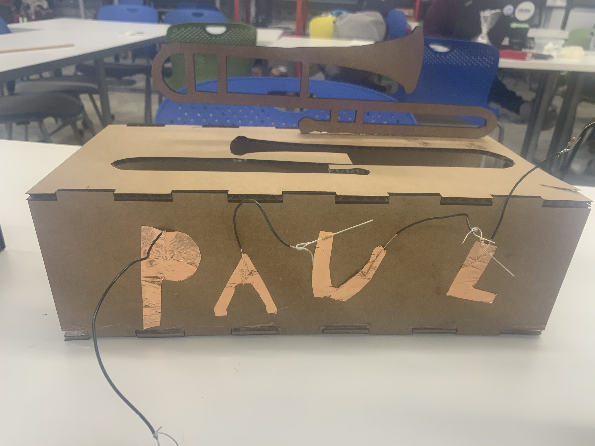

Press-Fit Construction: Valerie
Meet my friend Paul, a junior in Lowell.
Paul loves to play the trombone, and loves to dance. It was his birthday on March 9, and I wanted to make him something related to music and trombones.
This week, we had to use two sensors in our projects, so I attempted to use 1) a capactive touch sensor, and 2) a piezo speaker sensor. My goal was to design a box with a trombone on it that would play music when pressed.
Step 1: Designing the box
The first thing I did was use OnShape to model the pieces of the box and the trombone. I modeled the box as a press-fit construction kit, and used a series of semicircles and lines to draw a trombone on the box (after looking up a trombone to make sure I didn't accidentally draw a trumpet!).
These are pictures of the pieces of my box. I made sure to account for the kerf of the laser, and also tried to make parts of the trombone thicker than initially intended to help with stability.
Step 2: The Cutting and Assembly
I next took these designs to the laser cutter! I used the settings designated for cardboard, and made sure I could cut out a small square of cardboard first. Once this worked, I cut out the pieces I designed. I ended up with 4 cardboard pieces that were the top, bottom, and sides of my box, and an extra trombone cut out of the top face of the box.
I then put these press-fit pieces together. They fit relatively well, but I added a bit of hot glue for support. I also hot glued the extra trombone cut out to the top of the box for an ~aesthetic affect~.
Step 3: The Capacative Sensor
I next wanted to design the capacative touch sensor. To do this, I used strips of metallic tape and cut them out into four pieces to spell "P A U L". I soldering the ends of wires to each of these pieces, and soldered wires in between each piece together. This is to make sure that anywhere anyone touched on any of the letters "P A U L" would make something happen.
I then stuck these pieces of metallic tape with wires soldered to them to the side of the box (using the stickiness of the tape) and thus I ended up with a box that said "P A U L" on the side.
I wanted my capacative touch sensor to power a speaker to play a song. To do this, I first got them to power a simple LED.
I realized that I had to somehow callibrate the capacative touch sensor, so I looked at a table of output values and tried to determine a "threshold" for what values looked like when I didn't touch versus touched the metallic letters. I then wrote code that only sent voltage to a pin with a resistor and an LED on it if these values were above a certain threshold - i.e, if I was touching any of the letters.
The code looked like:
#include
CapacitiveSensor Sensor = CapacitiveSensor(7,9);
int LED1 = 13;
void setup() {
Serial.begin(9600);
pinMode(LED1, OUTPUT);
}
void loop() {
long sensorValue = Sensor.capacitiveSensor(1000); //Change the number of samples to get the required timing and sensitivity.
//delay(10);
int threshold = 1000;
Serial.println(sensorValue);
if (sensorValue > threshold){
digitalWrite(LED1, HIGH);
}
else{
digitalWrite(LED1, LOW);
}
}
...and the powering of the LED this way worked and looked like:

Step 4: The Piezo Speaker Sensor
Here is some basic information on how the Piezo speaker works, specifically regarding the tone function I was trying to use to get the Piezo Speaker to play a song:
Check out the information here!
I unfortunately was unable to get the speaker to work in this case and had to give the present to Paul before he left campus :(. (I could get the speaker to play one tone, but not make a song). But, I am trying to incorporate the speaker into a future project (I brought a speaker home with me) instead so that I can learn how to get it to work.